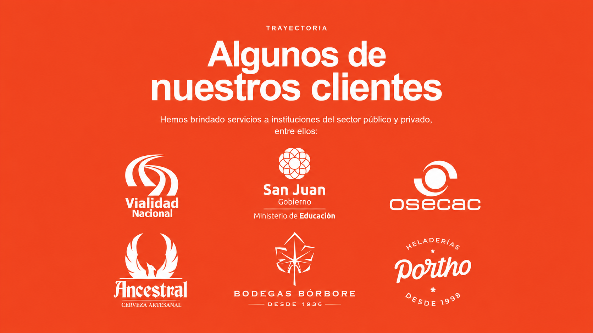

San Juan · Más de 20 años de experiencia
Protegemos tus espacios.
Cuidamos el entorno.
Saneamiento ambiental, control de plagas y mantenimiento de espacios verdes con atención profesional y soluciones a medida.
Una empresa familiar
+20años brindando soluciones seguras, eficaces y responsables.QUIÉNES SOMOS
Experiencia que se adapta a cada necesidad.
Contamos con técnicos habilitados, operarios especializados y equipamiento moderno para intervenir con seguridad, incluso en zonas remotas y de difícil acceso.
ROYA EN ACCIÓN
Trabajo real.
Resultados visibles.
Conocé parte de nuestro trabajo y el compromiso que ponemos en cada intervención.
SERVICIOS
Soluciones integrales
para cada espacio.
Desinfección ambiental
↗Limpieza y desinfección de tanques
↗Mantenimiento de espacios verdes
↗Planes preventivos y asesoría técnica
↗Productos especializados para higiene
↗MÉTODOS HABILITADOS
Intervenciones con respaldo técnico.
Aplicamos protocolos basados en prácticas científicas y estándares internacionales: aspersión, nebulización de última generación, geles, cebos, trampas y jaulas. Cada servicio queda documentado para asegurar trazabilidad y cumplimiento.
01
Seguridad y ambiente
Productos biodegradables autorizados y prácticas responsables.
02
Operación confiable
Flota y equipos preparados para proyectos industriales y mineros.
03
Respaldo documentado
Certificados, protocolos y garantías en cada intervención.
Algunos de nuestros clientes

CONTACTO
¿Cómo podemos ayudarte?
Escribinos para solicitar una visita, cotización o asesoramiento técnico.
WhatsApp→